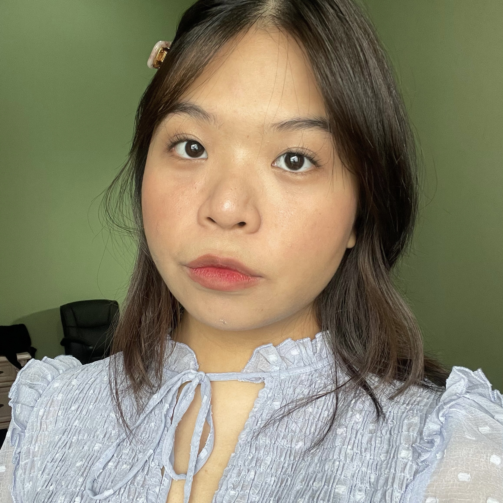
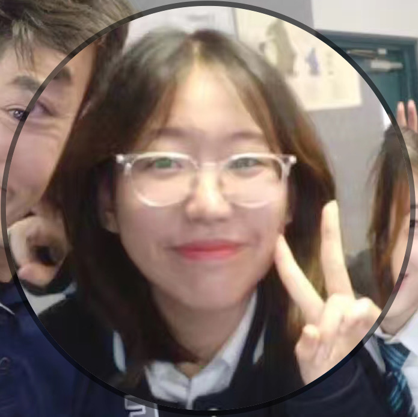
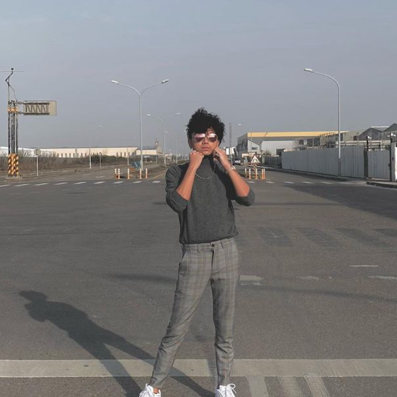

Reflections
Nayli
My tasks included doing research on trends in the Machine Learning industry as well as interviewing an IT professional. In order to understand what I was writing about, I had to do some in-depth research on how machine learning works and operates. I participated in every meeting and it was easy to discuss our workflow as everyone was cooperative and friendly. The only problem was that none of us expected our assignments to be due so closely together, so there was a bit of a struggle towards the end.
Melanie
Other than actively contributing during each meeting and filling up the sections relevant to me on the report, I was also in charge of formatting, prettifying if you will our group report and making sure everyone fills out their relevant parts. I did the research for the “Robots” section under IT technologies, and it was interesting to see the many ways robots do and will continue to impact our lives. Since google docs does not support many functions, I had to do the report on Microsoft Word, and hence had to coordinate with Kevin and Shuyun to make sure the report and website content match.

Shuyun
Throughout this report, I filled out the parts relevant to me. I worked hard to integrate into the team and to complete the parts that I was responsible for. I gained a lot from the process of analyzing natural language in chatbots. I am responsible for filling out the html webpage. Though communication is not my strong suit, I will continue my efforts in contributing to the project and improve on my communication skills.
Kelvin
Overall, the assignment went smoothly, the only hiccup along the way was the fact that there was suddenly so much due for this week including this Intro to IT assignment, Programming test and Practical Databases test. But enough about that stuff. The assignment was a fun one to think about, a massive bunch of writing and text and then presenting it all pretty on a website and PDF. But I worry about the future of the assignment, had we bitten off more than we can chew. None of us have any game making experience. We may have the enthusiasm, but I think it will be quite fun to try and make a game too. We have already discussed the different game making platforms, overall, I am looking forward to the next step of our assignment.

Yu-Cheng
Throughout this assignment, I’ve created our GitHub repository and recorded all the meeting materials including agendas, recordings, and actions. Apart from filling out my personal profiles and research of autonomous vehicles, I’m also responsible for CSS coding in terms of the styles of the website. The entire team was cooperative, and everyone participated in every meeting.
MS Records
| Date | Agenda Link | Recording Link | Actions Link |
|---|---|---|---|
| 16/04/21 | https://bit.ly/3x8kzzg | https://bit.ly/3dr4wo1 | https://bit.ly/3x7n8Bi |
| 18/04/21 | https://bit.ly/3uTjbhM | https://bit.ly/3tyEzIR | https://bit.ly/3ecAlQL |
| 23/04/21 | https://shorturl.at/cfvCG | https://rb.gy/mhmd2d | https://shorturl.at/bfpJ1 |
| 25/04/21 | https://cutt.ly/Xv8hxIq | https://cutt.ly/Mv8jBVK | https://cutt.ly/8v8hkSE |
| 30/04/21 | https://cutt.ly/UbkACT3 | https://cutt.ly/kbkAOxD | https://cutt.ly/ObkALKu |
| 01/05/21 | https://shorturl.at/grFKO | https://shorturl.at/oIMO1 | https://shorturl.at/hoFX8 |